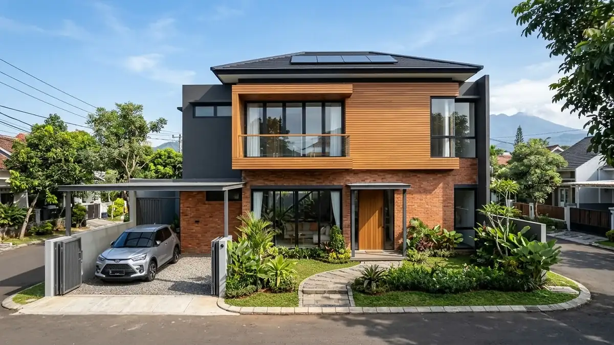

Ringkasan Inti
- Arsitek bersertifikat IAI membantu menyusun rencana renovasi presisi sejak awal untuk mengeliminasi revisi mendadak yang mahal di tengah proyek.
- Perhitungan volume material yang akurat dalam Rencana Anggaran Biaya (RAB) mencegah pemborosan dan sisa material menumpuk.
- Pemahaman mendalam mengenai material lokal Jawa Timur memungkinkan pemilihan substitusi berkualitas tinggi dengan selisih harga signifikan.
- Gambar kerja DED yang jelas mengikat kontraktor pelaksana pada sistem kontrak harga pasti tanpa biaya tambahan tersembunyi.
Daftar Isi Artikel
Banyak pemilik rumah di Malang berasumsi bahwa menyewa jasa arsitek bersertifikat Ikatan Arsitek Indonesia (IAI) hanya akan menambah pos pengeluaran renovasi. Namun pada realitas lapangan, renovasi tanpa cetak biru arsitektur justru menjadi sumber kerugian finansial terbesar akibat salah beli material, bongkar pasang struktur di tengah jalan, dan estimasi waktu tukang yang melar. Melibatkan arsitek profesional sejak fase perencanaan terbukti menjadi strategi paling efektif untuk menekan biaya renovasi rumah Malang hingga 25%.
1. Kenapa Arsitek Bersertifikat Dapat Membantu Menghemat Biaya Renovasi?
Arsitek bersertifikat IAI memiliki keahlian multidisiplin yang memadukan estetika ruang, ilmu rekayasa kekuatan bahan, dan efisiensi manajemen anggaran. Peran penghematan biaya terjadi melalui beberapa mekanisme kunci:
- Asesmen Struktur Eksisting yang Cermat: Sebelum membongkar, arsitek memeriksa kondisi kolom, balok, dan fondasi eksisting. Elemen struktur yang masih prima dipertahankan dan diintegrasikan ke dalam desain baru, menghemat biaya pembongkaran dan pengecoran baru hingga puluhan juta rupiah.
- Penyusunan Rencana Anggaran Biaya (RAB) Rinci: Arsitek menyusun Bill of Quantities (BoQ) dengan volume meter persegi, meter kubik, dan satuan unit yang akurat. Hal ini mencegah markup harga sepihak oleh oknum mandor atau tukang borongan.
- Rekomendasi Material Alternatif Bernilai Tinggi (Value Engineering): Arsitek mengetahui kapan harus menggunakan material premium dan kapan dapat memakai material lokal Jawa Timur yang lebih ekonomis tanpa mengorbankan durabilitas dan estetika.
- Efisiensi Sirkulasi dan Pencahayaan: Desain bukaan skylight dan ventilasi silang yang dirancang arsitek memangkas konsumsi listrik AC dan lampu harian pemilik rumah secara permanen.

2. Bagaimana Perencanaan Matang Memengaruhi Total Biaya Renovasi?
Dalam konstruksi, biaya perubahan desain di atas kertas berharga nol rupiah, sedangkan perubahan desain saat dinding bata sudah terpasang membutuhkan biaya pembongkaran, pembuangan puing, dan pengadaan material baru. Perencanaan menyeluruh mencakup:
- Visualisasi 3D Fotorealistik: Klien dapat melihat bentuk akhir rumah, perpaduan warna cat, dan posisi pencahayaan sebelum semen diaduk, mengeliminasi rasa kecewa atau penyesalan di kemudian hari.
- Gambar Kerja Detail Engineering Design (DED): Menjadi acuan mutlak bagi mandor sehingga tukang bekerja secara presisi tanpa ragu atau menerka-nerka ukuran.
- Timeline Pelaksanaan Proyek yang Terjadwal: Jadwal pengadaan material yang sinkron dengan tahap kerja tukang mencegah keterlambatan yang berdampak pada membengkaknya upah harian.
- Penyediaan Dana Kontinjensi yang Terukur: Arsitek mengalokasikan pos dana cadangan darurat sebesar 5–10% secara rasional untuk mengantisipasi temuan kerusakan tersembunyi seperti pipa bocor di balik dinding lama.
Catatan Arsitek Malang
Jangan pernah memulai proyek renovasi rumah bertingkat di Malang hanya bermodalkan sketsa kasar di kertas coretan tangan. Dengan dokumen teknis resmi berlisensi IAI dari tim kami, Anda memegang kendali penuh atas setiap rupiah yang dikeluarkan dan memiliki dasar hukum kontrak yang kuat saat bekerja sama dengan kontraktor pelaksana.
3. Apa Risiko Renovasi Tanpa Perencanaan Arsitek yang Tepat?
Menyerahkan renovasi struktural langsung kepada tukang tanpa gambar arsitek berlisensi menyimpan sejumlah risiko laten yang kerap berujung bencana anggaran:
- Pembongkaran Dinding Pemikul Beban (Load-Bearing Wall): Kesalahan membongkar dinding utama tanpa perhitungan balok baja pengganti dapat mengakibatkan lantai atas retak parah hingga ambruk, membutuhkan biaya perbaikan darurat yang sangat mahal.
- Over-Budget Akibat Belanja Material Boros: Pembelian material tanpa perhitungan volume sering menyisakan puluhan sak semen membatu dan sisa keramik yang tidak terpakai.
- Perselisihan dengan Kontraktor: Tanpa BoQ yang terperinci, mandor kerap mengajukan tagihan pekerjaan tambah (addendum) secara sepihak yang membuat anggaran awal membengkak hingga dua kali lipat.
- Masalah Izin PBG Renovasi: Perubahan fasad atau penambahan luasan bangunan bertingkat tanpa gambar DED arsitek dapat memicu teguran dari Dinas PUPR setempat.
4. FAQ (Pertanyaan Sering Diajukan)
Apakah biaya jasa arsitek justru menambah total pengeluaran renovasi?
Tidak. Fee jasa arsitek rata-rata hanya berkisar 3–7% dari total anggaran konstruksi, namun perencanaan matang yang dihasilkan terbukti mampu menghemat 15–30% dari potensi pemborosan material, bongkar pasang akibat salah desain, dan pembengkakan upah kerja tukang.
Berapa persen potensi penghematan biaya dengan perencanaan arsitek yang baik?
Potensi penghematan riil berkisar antara 15% hingga 25% melalui optimalisasi volume material lokal Jawa Timur, pemilihan spesifikasi alternatif yang tepat fungsi, dan kepastian kontrak RAB "Lump Sum" yang mengunci harga proyek tanpa biaya tersembunyi.
Apakah semua jenis renovasi membutuhkan arsitek bersertifikat IAI?
Untuk renovasi kosmetik ringan seperti pengecatan ulang atau penggantian keramik, pendampingan mandiri sudah cukup. Namun untuk renovasi yang mengubah denah tata ruang, penambahan lantai bertingkat, atau pembongkaran dinding struktural penopang beban, kehadiran arsitek berlisensi IAI sangat mutlak untuk menjamin keamanan bangunan.
Rencanakan Renovasi Rumah Hemat & Estetis di Malang
Konsultasikan kebutuhan renovasi Anda bersama arsitek berlisensi IAI kami untuk mendapatkan estimasi RAB transparan dan desain modern yang terukur.

Muhammad Musyaffa
Penulis & Tim Riset Arsitektur Maroon Arsitek Malang, spesialis manajemen konstruksi, optimasi anggaran RAB renovasi, dan perancangan rumah tinggal tropis modern.